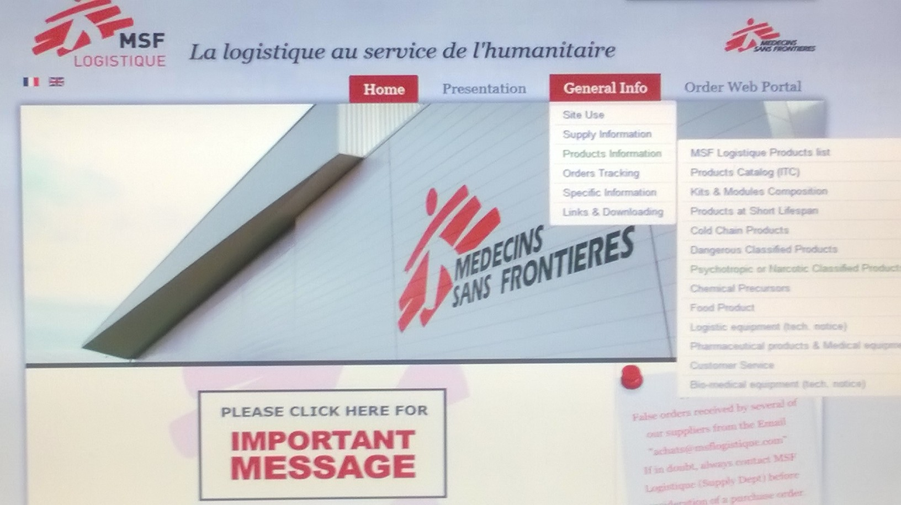

EN 2017 OCP Psychotropic or narcotic products procedure MSF Log
http://wwwop.msflogistique.org/index.php/en/

Psychotropic and Narcotic products
The exportation of medical products classified "psychotropic" or "narcotic" (see list below) is subject to particular constraints (authorisation of importation is mandatory).
| PSYCHOTROPIC | NARCOTIC |
|---|---|
| Diazepam (all forms & dosages) | Fentanyl (all forms & dosages) |
| Phenobarbital (all forms & dosages) | Morphine (all forms & dosages) |
| Midazolam (all forms & dosages) | Pentazocine (all forms & dosages) |
| Zopiclone (all forms & dosages) | Pethidine (all forms & dosages) |
| Alprazolam (all forms & dosages) |
Thank you for precisely respecting the procedure described below (this procedure asking a certain delay, makes it important to plan your orders and group them).
1° step : For each order containing these products, you have to obtain the authorisation of importation signed by the authorities of your country (separate authorisations for psychotropic and narcotics). On this authorisation has to appear the following information
The authorisation number.
The complete label of the product : name, dose, form (complete MSF label ) + quantity
The recipient : name and address of the place where MSF Logistique will send the products (place of custom clearance).
The name and address of the exporter : MSF Logistique - 3 rue du Domaine de la Fontaine - 33700 MERIGNAC - FRANCE (and not MSF headquarter !!!).
2° step : You need to Email or fax this authorisation of importation together with your order immediately to the operational sector of MSF Logistique.
3° step : After verification of the operational sector MSF Logistique, you send the original of this authorisation to the operational sector of MSF Logistique (keep a copy if you didn’t receive a duplicate already).
4° step : When you receive the products, let the customs check the name and quantity of each product concerned and gather your form of authorisation of importation and the authorisation of exportation delivered by the French authorities which are in the envelop together with the letter of air transport.
Psychotropic and narcotics included in the kits
These products are the object of a specific file and are sent separately from the kits. Don’t forget to add the authorisations of importations corresponding with your order of kits.
Pay attention : the quantity of injectable diazepam of the kits has been rounded in function with the available packaging at MSF Logistique. It’s this quantity that has to appear on your authorisation of importation (contact the operational sector of MSF Logistique).
No accessible authorities in your country
In some countries, it is impossible to obtain an authorisation of importation because there is no more ministry of health or competent authority or because you are in an emergency situation which makes it impossible to reach the health authorities of the country. In this case, but only in this case, a letter describing the context which is signed by the pharmacist of MSF Logistique will replace the authorisation of exportation for the French authorities. On your side, it is necessary that upon arrival of the products, you send us (by fax or Email) a signed message (clic here to download the form) of the MSF doctor (medecin coordinator or other doctor of the group) restating the content of the psychotropic and/or narcotics in the shipment (items and quantity).